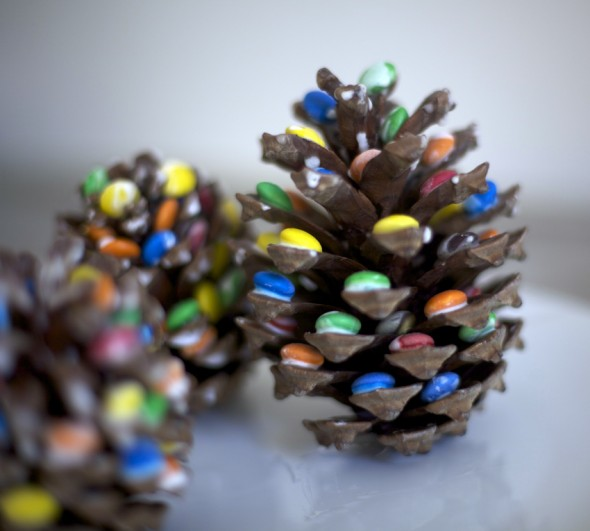
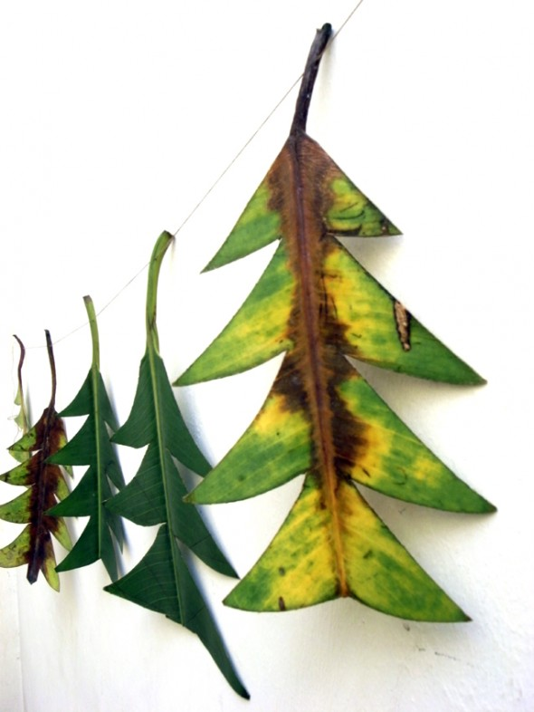
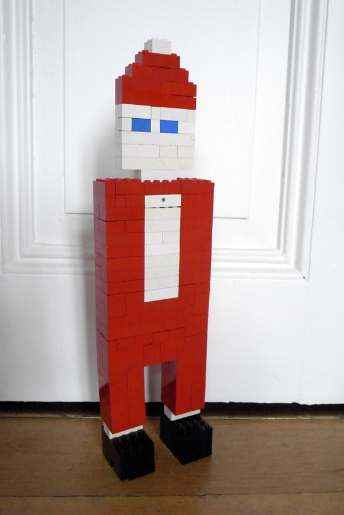
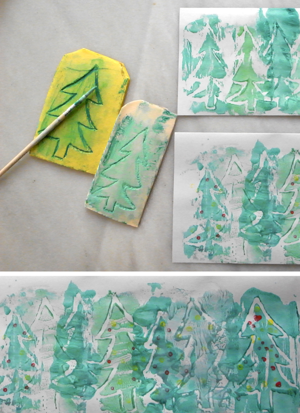
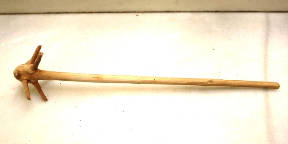
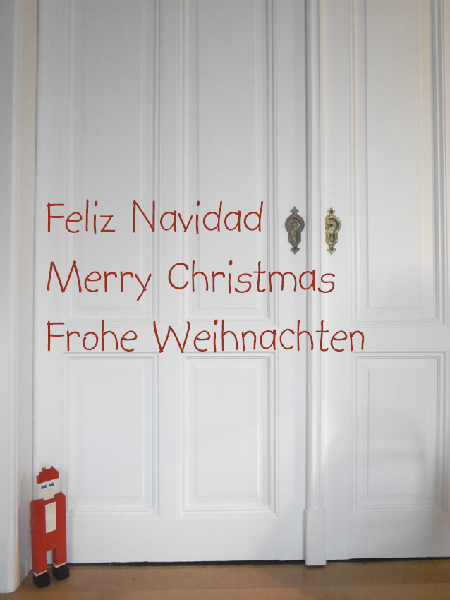

Pine cone as Christmas decoration:
Sticking m&m`s on a pine cone you will change it into a little Christmas tree.



Festoon of Christmas trees We've cut some leaves of a banyan tree into Christmas tree shapes.
Read more →


Stamping with polystyrene: Trim the tray obtaining a plane and then scratch the surface as you want. We did a forest.
Read more →
Recycling the Christmas tree: My grandmother Erna recycled the top of the Christmas tree as a beater, working really nice!
Read more →